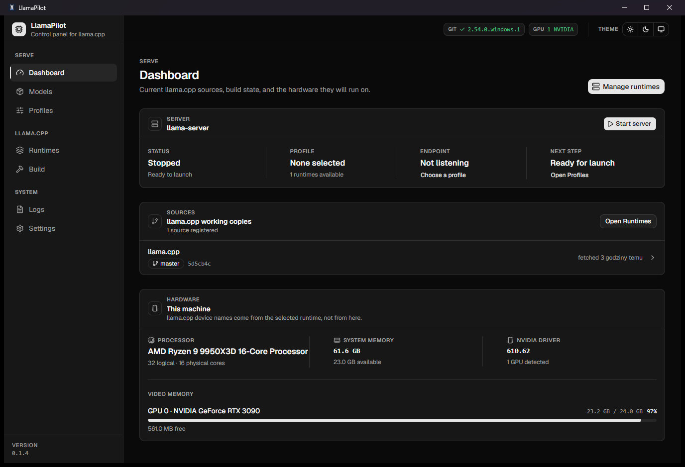

Build your runtime
Choose a llama.cpp revision and a CPU, CUDA, or Metal backend. Keep working builds as immutable snapshots.
YOUR LOCAL AI CONTROL CENTER
Take the controls of llama.cpp. Build your runtime, manage your models, and run local AI from one native desktop app.
Free & open source · macOS, Windows & Linux
FROM SOURCE TO SERVER
Keep every step of your local inference workflow in one place, with the tools you already trust.
Choose a llama.cpp revision and a CPU, CUDA, or Metal backend. Keep working builds as immutable snapshots.
Connect your GGUF folders or download an exact model from Hugging Face. Create a profile for the way you want to run it.
Start your server, follow its logs, tune performance, and connect coding agents through an OpenAI-compatible endpoint.

POWER WITHOUT THE GUESSWORK
Controls come from your binary’s own capabilities. See exactly which flags your build supports, with launch previews you can inspect before pressing Start.
Compare real coding-prompt timings in Performance Lab. Auto-tune tests supported GPU placements and saves the fastest successful configuration.
MEASURE. COMPARE. TUNE.Check your server connection, then copy ready-to-use settings for OpenCode, Pi, Aider, or an OpenAI-compatible client.
Immutable runtime snapshots keep your known-good binaries ready to run. Supervised processes, clear health checks, and searchable logs put you in control from startup to shutdown.
READY WHEN YOU ARE
Choose your platform. Take the controls.
{{version}} Latest stable release ↗
macOS 13 or later
Apple Silicon & Intel
Ad-hoc signed · Not Apple-notarized
Windows 10 or 11
x64 processors
Unsigned · SmartScreen may prompt
Ubuntu 22.04 / 24.04
x64 processors
Make the AppImage executable to run
OPEN SOURCE. OPEN POSSIBILITIES.
LlamaPilot is free software under the MIT license.
Inspect the
code, report an issue, or help shape what comes next.